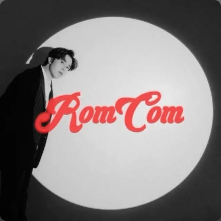
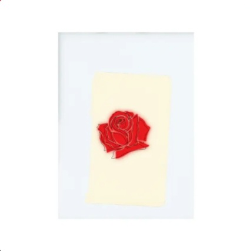
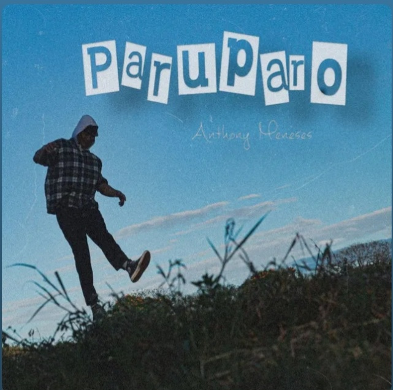

Romcom by Rob Deniel
My Love, Right now, I hope you’re listening to “13” by LANY… and as those soft, aching chords play, I want you to hear my heart in every word that follows. I’ve been thinking about us—about how far we’ve come, about the quiet moments and loud ones, the laughter, the arguments, the messages at 2 AM, and the comfort of knowing that, somehow, in a world this chaotic, I found you. This song makes me feel everything at once. Maybe that’s why I wanted you to hear it while reading this—because it says what I sometimes can’t: how fragile love can feel, and how deeply I want to hold on to ours. Do you remember the way we looked at each other when everything was still new? That feeling hasn’t left me. And even when life gets messy, confusing, or uncertain… you're still the one. You’re still the person I want to run to when things fall apart, and when things fall together. "Was it something I said?" "Was it something I did?" The song asks those questions that sometimes haunt us when we're scared to lose what we love. And the truth is—if I ever hurt you, if I ever made you feel less than everything you are to me—I’m sorry. You deserve to be reminded every single day of how deeply you are loved. We’re not perfect. But we’re real. And I’d rather struggle through life holding your hand than dance through it pretending I’m fine without you. I love you more than words in a letter or lyrics in a song can ever say. But I’ll keep trying to show you—with music, with my time, with my patience, with my presence. Even if we ever feel a little lost along the way… Let’s not forget how much we found in each other. With all of my heart, Me

13 by LANY
Habang pinapakinggan mo ang kantang ito, gusto ko sanang hayaan mong ang puso ko ang kumausap sa puso mo. Isipin mo na bawat salitang maririnig mo ngayon ay galing sa bawat pintig ng pagmamahal ko sa’yo. Ikaw ang paru-paro ng buhay ko—dumating nang tahimik, pero bigla na lang akong nabulag sa ganda mo. Hindi lang dahil sa itsura mo, kundi dahil sa liwanag na dala mo. Sa dami ng gulo at ingay ng mundo, ikaw ang naging tahimik kong sandalan, ang kalmadong dulot ng presensiya mo, at ang init na kay sarap balikan sa bawat yakap mo. Mula nang dumating ka, naging makulay ang bawat araw ko. Para kang sikat ng araw pagkatapos ng mahabang gabi—hindi lang basta liwanag, kundi pag-asang may bagong simula araw-araw. Kahit tahimik ka lang minsan, sapat na para gumaan ang pakiramdam ko. Kahit simpleng hawak ng kamay mo, ramdam ko na: ito na ‘yon. Ikaw na ‘yon. Minsan napapaisip ako kung anong mabuting bagay ang nagawa ko para mapasakin ka. Hindi ako perpekto, alam mo ‘yan. Pero ikaw ang dahilan kung bakit gusto kong maging mas mabuting tao araw-araw. Dahil sa’yo, natutunan kong magmahal nang buo, nang walang alinlangan, nang may tapang at lambing. At gaya ng paru-paro sa kantang ‘to, ikaw yung lumipad papasok sa puso kong dati'y walang direksyon. Ngayon, ikaw na ang tahanan ko. At habang pinapakinggan natin ang bawat himig ng kantang ito, pinapangako ko: aalagaan ko ang mga pakpak mo. Hindi ko ito kailanman puputulin. Gusto kong lumipad kang malaya, pero alam mong may isang tao sa baba na laging handang saluhin ka kung sakaling mapagod ka. Mahal kita. Sa lahat ng paraan. Sa lahat ng oras. Sa lahat ng pagkakataon. At sa bawat ulit ng “Paru-paro” sa kanta, ikaw at ikaw ang naiisip ko. Salamat, mahal ko, sa paglipad papunta sa puso ko. Sana dito ka na lang palagi.

Paruparo by Anthony Meneses